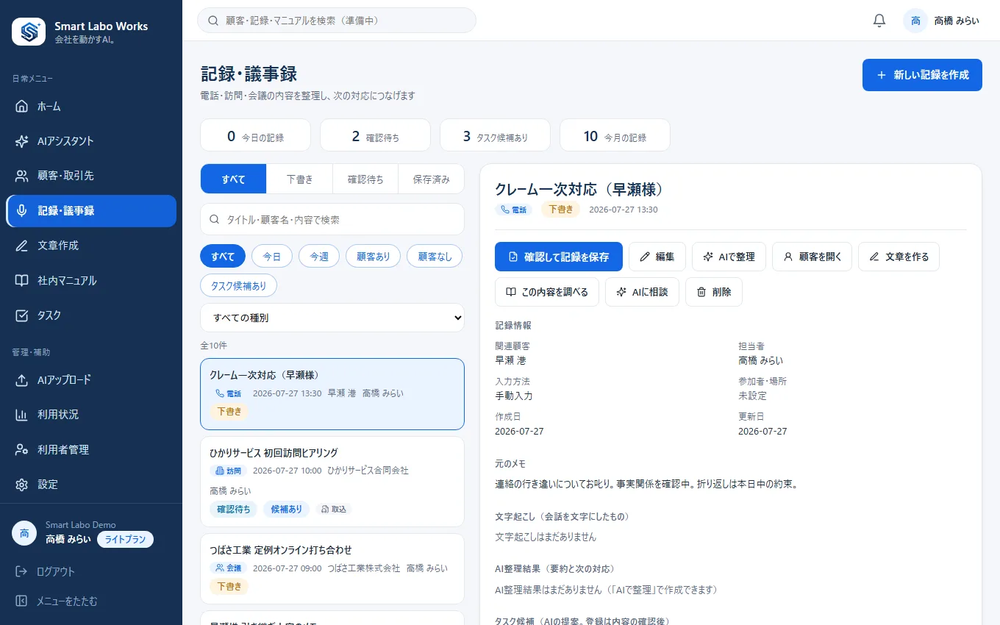
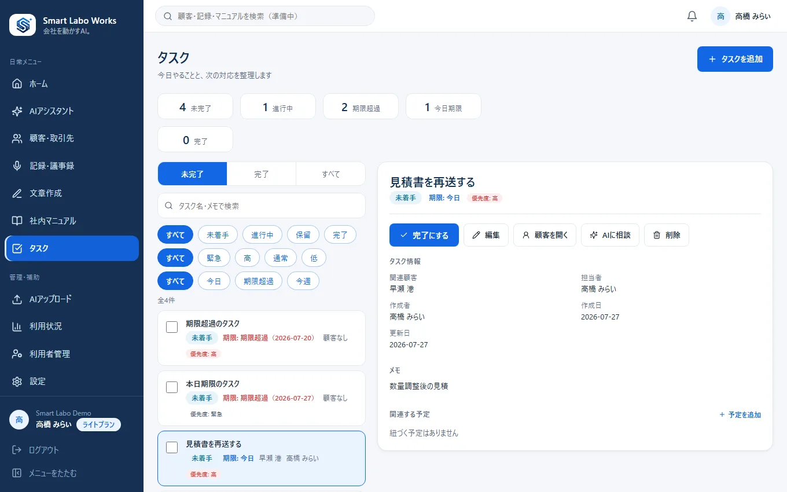
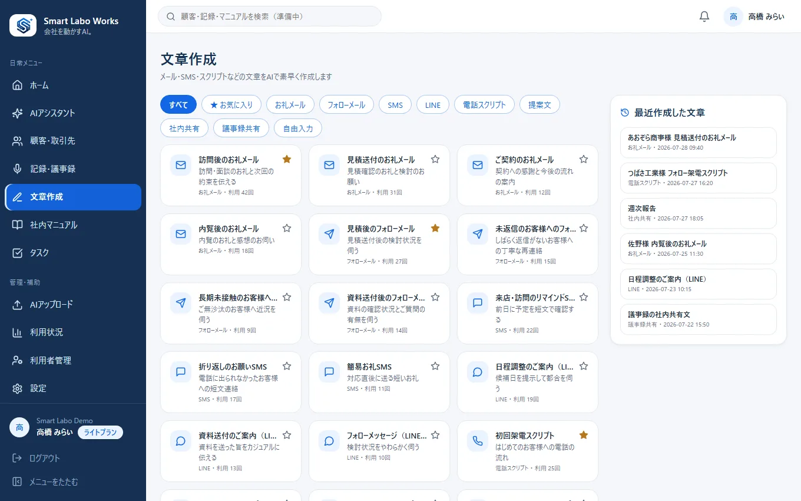

顧客情報が分散している
名刺、メール、表計算ソフト、個人のメモ。どこに何があるのかを探すところから仕事が始まる。
全社員に、AIという戦力を。
顧客、予定、タスク、記録、文書、社内資料。バラバラだった会社の情報をひとつにつなぎ、 AIが日々の仕事を支援します。中小企業のための業務支援システムです。

実際の画面です（表示しているデータはすべて架空のものです）
コンセプト
顧客、記録、タスク、文書、資料、マニュアル。これまで人と場所に散らばっていた情報が AIを通じてつながり、どこからでも探せるようになります。
会社のなかの情報
AI Smart Labo Works が受け取り、整理して提案します
全体検索でどこからでも探せる
入れる場所がひとつ
顧客も記録も資料も、同じシステムに残します。どこに保存するか迷いません。
AIが同じ情報を踏まえる
相談も文章の下書きも、会社に蓄積された記録を前提に支援します。
探す場所もひとつ
全体検索で、顧客・タスク・予定・記録・文書・社内資料を横断して見つけられます。
よくある課題
特別な会社の話ではありません。人数が少ないほど、一人ひとりの抱えるものが増えていきます。
名刺、メール、表計算ソフト、個人のメモ。どこに何があるのかを探すところから仕事が始まる。
打ち合わせは終わったのに、記録は頭の中のまま。数日たつと、決まったことが思い出せない。
同じ場面の対応でも、書く文章も進め方も人それぞれ。教えたいが、教える時間もとれない。
「あとでやる」が積み重なっていく。気づいたときには、連絡が一週間遅れている。
便利だとは聞くけれど、自社の何にどう使えばいいのかが決まらないまま止まっている。
担当者が休むと、その人しか知らない事情ごと仕事が止まる。引き継ぎのたびに一から説明する。
Company Brain Basic
会社が登録したマニュアル・規程・資料を対象に、AIが根拠を示しながら回答します。 社内の「これ、どうするんだった？」を、人に聞かずに確かめられます。
社内マニュアル・規程を書くか、PDF・Word・Excel・画像のファイルを登録します。登録できるのは管理者です。
「経費精算の締め日は？」のように聞くだけです。質問はどの利用者でもできます。
回答は、会社が登録した資料の内容だけに基づきます。書かれていないことは答えず、確認できなかった旨を返します。
どの資料を根拠にしたかを表示します。原文をその場で開いて確かめられます。
今回の検索で見つかった関連資料を最大3件示します。AIが名前を作るのではなく、実際に登録されている資料だけを挙げます。
推測では答えません。根拠となる資料が無い場合は「登録されている社内資料からは確認できませんでした」とお伝えします。会社ごとにデータを分けて管理し、他社の資料が回答に混ざることはありません。
管理者ダッシュボード
顧客・予定・タスク・AI利用状況・社内資料など、日々確認したい情報をまとめて把握できます。 管理者向けの画面です。
表示されるのは自社の実データだけです。各項目からその機能の画面へそのまま移動できます。
解決
新しい仕事を増やすのではありません。すでにやっていることを、通り道の上でつなぎ直します。
Smart Labo Works
散らばった情報を受け取り、要点と
次の対応を整理して提案します。
AIは提案のみを行います。保存・更新・送信は、内容を人が確認してから操作します。AIが勝手に記録を書き換えたり、お客様へ連絡したりすることはありません。
導入後の業務フロー
手順を覚え直す必要はありません。営業に出て、戻ってきて、確認する。その流れは変わりません。
これまで と 導入後
新しい作業を増やすのではなく、いまやっていることの「探す・確認する」が変わります。
仕事の量そのものより先に、「どこに何があるか」が変わります。
サービス全体像
相談、記録、整理、次の行動まで。日々の仕事を一つの流れにつなぎます。
今日の進め方や、伝え方に迷ったことを聞いてみる。
考えられる進め方と、次の一手を候補として示します。
訪問、電話、オンライン。いつもどおり話す。
短いメモで十分です。話したことをその場で残す。
メモから、要点・次の対応・タスクの候補を下書きします。
提案をそのまま反映することはありません。人が読み、直すところを直してから決めます。 確認を通っていない内容は保存されません。
確認できた内容だけが、会社の記録として登録されます。
次の相談は、ここまでの記録を踏まえたところから始まります。
主要機能
機能を全部覚える必要はありません。日々の仕事でよく使うものから始められます。
会社のマニュアル・規程・資料を対象に質問できる会社専用AI。登録資料を根拠に回答し、参照した資料と次に確認すると良い資料を示します。
業務の相談、対応方針の整理、文章の下書きを支援します。顧客を選んで相談すると、その顧客の状況を踏まえた内容になります。
受け取った資料やスキャンした書類を保管します。PDF・Word・Excel・画像に対応し、AIが文字の読み取りと内容の整理を下書きします。
会社の手順やルールを登録すると、登録資料だけを根拠に、参照元とあわせて回答の候補を示します。同じ説明を繰り返す場面を減らせます。
顧客・タスク・予定・記録・文書・社内資料などを、ひとつの検索窓から横断して探せます。どこに保存したかを覚えておく必要がなくなります。
顧客情報と対応履歴を会社の中で共有します。担当者が変わっても経緯をたどれます。名刺を読み取って入力をサポートします。
実際のシステム画面
下の画面は、いずれも実際に動いているSmart Labo Worksの画面です。



実際の画面です。表示データはすべて架空です。画面は改良のため変更する場合があります。
選ばれる理由
道具を増やすことではなく、日々の仕事が回るようにすることを目的にしています。
AIだけを別の画面で使うのではなく、顧客、記録、予定、タスクとつながった状態で使えます。相談した結果が、そのまま次の仕事につながります。
AIの提案を自動で反映することはありません。内容を利用者が確認し、直したうえで保存します。何が記録されるかを人が決められます。
AIやITに詳しくない方でも始められるように、画面の項目と操作を絞っています。日々の相談や記録から使い始められます。
会社ごとにデータを分けて管理する設計です。ログインした会社の情報だけが表示されます。
導入して終わりにはしません。実際の使われ方やご要望を伺いながら、使いやすさを調整していきます。
料金
まず1人から始めて、使う人が増えたぶんだけ広げていくことができます。
Company Brain Basic・管理者ダッシュボードを含む全機能を、ひとまとめにしたプランです。上位プランはありません。
基本料金に含まれるもの
導入の流れ
今の業務を伺うところから始めます。準備が整っていなくても構いません。
現在の業務やお困りごとを伺います。
改善できる業務と、利用方法をご説明します。
会社情報と利用者情報を設定します。
基本操作とAIの使い方をご案内します。
実際の業務で使いながら、必要に応じて改善します。
FAQ
いいえ。AIは内容を提案します。保存や更新は、利用者が確認して操作します。
はい。初回案内とシンプルな操作画面を用意しています。日常の相談や記録から始められます。
Webブラウザから利用できます。PC、タブレット、スマートフォンに対応した画面設計です。
会社ごとにデータを分離する設計を採用しています。ログインした会社の情報だけを表示します。
1アカウントから利用できます。追加アカウントは1人あたり月額3,000円（税別）です。
初期設定と基本操作をご案内します。会社情報や利用者の登録もサポートします。
顧客管理、記録、タスク、予定、文章作成など、複数の業種で使える基本機能を備えています。具体的な使い方はヒアリング時にご案内します。
AIの回答には誤りが含まれる可能性があります。そのため、利用者による確認を前提としています。
はい。お問い合わせフォームの種別で「資料請求」を選んで送信いただくと、担当者よりご案内します。
会社紹介
株式会社スマートラボは、AIそのものを販売することを目的とした会社ではありません。
AIを実際の業務に組み込み、企業で働く一人ひとりが本来取り組むべき仕事へ集中できる時間をつくる会社です。 道具を増やすことが目的ではなく、日々の仕事が滞りなく回る状態をつくることを大切にしています。
業務の流れから設計し、機能の多さを競うことはしていません。
機能の多さより、現場で実際に使えることを重視しています。
導入して終わりではなく、実務に合わせて改善を続けます。
ブランドの考え方
AIを一部の詳しい人だけのものにせず、日々働くすべての人が使える状態を目指しています。
AIの導入方法が決まっていなくても問題ありません。 現在の仕事の流れを伺い、Smart Labo Worksで支援できることをご案内します。
資料請求（サービス紹介資料） 無料相談する お申し込みへ進む
無理な営業は行いません。まず資料をご覧いただくだけでも、ご相談だけでも受け付けています。